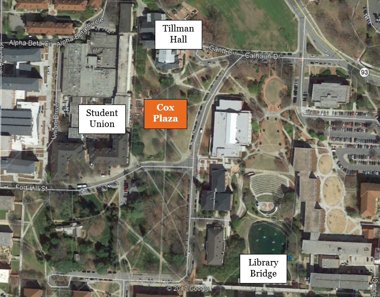

6:00 P.M. (or 5:00 P.M. after Daylight Savings)
So...Running Club?
That’s us!
What do y'all do?
Exactly what our namesake says…we run! The Running Club is a super laid-back group of Clemson students all with the same common interest, running.
I ran Cross Country and/or Track in high school and want to keep on running in college. Is the club right for me?
You bet it is! Many of our current members were in your exact same shoes coming to Clemson, and have found the Running Club to be a perfect way to continue on the fun of running with a team.
I never ran Cross Country or Track, but have always enjoyed running or am just getting into it. Is the club right for me?
Prior team, racing, or even running experience is not required to join the club, we’d love to introduce you to a team atmosphere where you are able to run with other people.
I’M in the Bridge to Clemson Program. Can I still be part of the club?
You sure can! All Clemson students, including Bridge students, are eligible to participate in the club. The only thing Bridge students cannot do is race in NIRCA races due to NIRCA policies.
I see that y'all go to several races. Do I have to race to be a part of the club?
Absolutely not! Our club is founded on the principle that we are open to runners of all ability levels and interests. If you just want to run for fun, the club is still the place for you. While we do have a racing team, everyone still runs together at practice, plays Frisbee together on Fridays, and hangs out together at the team dinners and events. Practices are super laidback and usually have a few different groups doing a different type of run on any given day.
I'm thinking about racing, but I'm nowhere near in the same shape as I was in high school. Are the races too competitive for me?
Our club competes in the National Intercollegiate Running Club Association (NIRCA), where we race against schools from all over the country. Much like our club, NIRCA is super chill and is open to runners of all abilities. If you want to compete and go really fast (like national champion fast), you can. If you want to race other people and just have fun, you can. If you want to try and break your high school PR, you can. If you want to try racing for the first time and not get last, you can. Racing club is totally what you make of it.
What else does the club do other than run?
Lots of stuff! Last year, our club started the Pendleton Elementary Running Club. Each week, we work with a group of elementary kids to introduce them to the sport of running. We play Frisbee on Friday (a club tradition passed down many generations), hang out at Y-Beach, play intramurals in Fike (if you are really really good at a certain sport that isn’t running, you’d be a huge addition to any of our intramural teams), go on hikes and trips around the Upstate, host monthly team dinners, and a whole lot more! Oh, and there’s also team swag…more to come on that in the future.
When do y'all meet?
We meet Monday-Thursday at Cox Plaza at 6PM, right between the Union and Tillman Hall. There’s a statue of the honorable Walter T. sitting on a bench, holding our spots until we arrive. On Fridays we meet in front of Fike to play Frisbee on the intramural fields.
Every week day? I don't think I can fit that in my schedule...
You don’t have to! You can show up as much or as little as your schedule allows, there’s no requirement on how many practices you have to go to. You can solely come to practices, or races, or frisbee, or the service projects, or any or all of it. It really is what you make of it!
The club definitely sounds like something I'd be interested in! How do I sign up?
All you have to do is show up to one of our practices. Eventually you will need to fill out some official forms and pay club dues, but feel free to come see what we’re all about first. If you have any other questions, shoot us an email at run@g.clemson.edu.